Write your name & answers on a sheet of paper.
?
??
?
??
Graphs you should know!
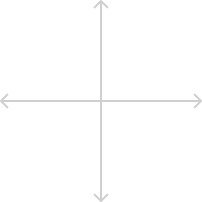
\(x^3\)
\(x^2\)
\(|x|\)
\(\sqrt{x}\)
\(\sqrt[3]{x}\)
Graphs you should know!
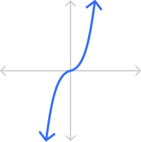
\(x^3\)
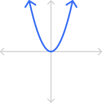
\(x^2\)
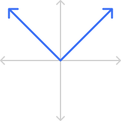
\(|x|\)
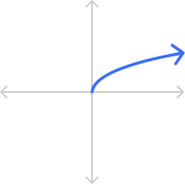
\(\sqrt{x}\)
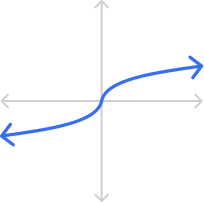
\(\sqrt[3]{x}\)
transformations modify a function and the shape of its graph; they include shifting, flipping, and stretching/shrinking
the parent function of a graph is the basic, un-transformed version
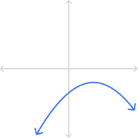
some random function
.
➔
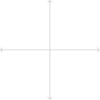
its parent function
.
some random function
\( -0.4x^2+8x-19\)
➔
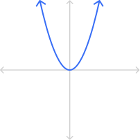
its parent function
\( x^2\)
What are the parent functions, and how have they been transformed?
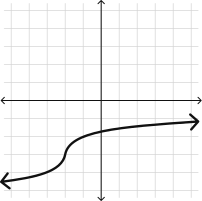
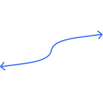
\(f(x)=\sqrt[3]{x}\)
shifted down by 2 and left by 3 (no stretch/shrink or flip)
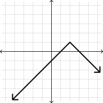
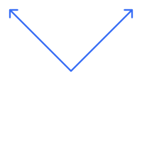
\(f(x)=\sqrt[3]{x}\)
flipped, shifted up by 1 and right by 2 (no stretch/shrink)
The number inside has a HORIZONTAL effect.
We mean literally inside, like inside of parentheses, inside of roots, inside of absolute value, etc.
The number outside has a VERTICAL effect.
We mean literally outside, like outside of parentheses, outside of roots, outside absolute value, etc.
Try not to overthink this!!
This is the general formula for transformations.
We can plug in any \(f\), \(a\), \(h\), or \(k\).
\( \boldsymbol{f(x)}\) is the parent equation
for example, \(f(x)=\sqrt[3]{x}\) transformed is \(a\cdot \sqrt[3]{x-h}+k\)
\( \boldsymbol{a}\) controls vertical flip & stretch/shrink
negative \(a\) flips over the \(x\)-axis
\( |a| > 1 \) means vertical stretch
\( |a| < 1 \) means vertical shrink
\( |a| = 1 \) means no stretch/shrink
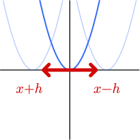
\( \boldsymbol{h}\) controls horizontal shift (because of the minus \(h\), this might work the opposite of how you'd expect!)
positive \(h\) means shift right
\( f(x \phantom{.} - \phantom{.} {\color{#386ef6}\#})\)
negative \(h\) means shift left
\( f(x \phantom{.} + \phantom{.} \#) = f(x - {\color{#386ef6}(-\#)})\)
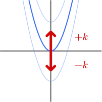
\( \boldsymbol{k}\) controls vertical shift
positive \(k\) means shift up
negative \(k\) means shift down
Let’s transform \(f(x) = | x |\) by vertically stretching it by 3 then shifting it 1 left and 4 down.
Based on the description above, what are \(a\), \(h\), and \(k\)?
vertical stretch by 3: \(a=3\)
horizontal shift left by 1: \(h=-1\)
vertical shift down by 4: \(k=-4\)
Let’s transform \(f(x) = | x |\) by vertically stretching it by 3 then shifting it 1 left and 4 down.
What is the equation of the function?
\(a\cdot f(x-h)+k \)
\(a\cdot |x-h|+k \)
\((3)\cdot |x-(-1)|+(-4) \)
\(f(x) = 3 |x+1|-4 \)
Let’s transform \(f(x) = | x+1 |\) by vertically stretching it by 3 then shifting it 1 left and 4 down.
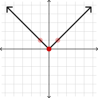
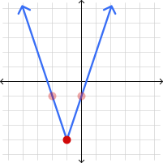
Let’s transform \(f(x) = x^3 \) by vertically flipping it over the \(x\)-axis then shifting right by 2.
Based on the description above, what are \(a\), \(h\), and \(k\)?
vertical flip with no stretch/shrink: \(a=-1\)
horizontal shift right by 2: \(h=2\)
no vertical shift: \(k=0\)
Let’s transform \(f(x) = x^3 \) by vertically flipping it over the \(x\)-axis then shifting right by 2.
What is the equation of the function?
\(a\cdot f(x-h)+k \)
\(a\cdot (x-h)^3+k \)
\((-1)\cdot (x-(2))^3+(0) \)
\(f(x) = -(x-2)^3 \)
Let’s transform \(f(x) = x^3 \) by vertically flipping it over the \(x\)-axis then shifting right by 2.
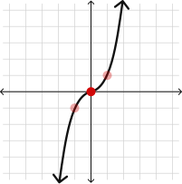
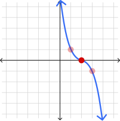
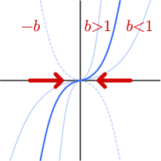
\( \boldsymbol{b}\) controls horizontal flip & stretch/shrink (warning: you must factor out \(\boldsymbol{b}\) to read \(h\) correctly!)
negative \(b\) is flip over the \(y\)-axis
\( |b| > 1 \) is horizontal shrink (thinner)
\( |b| < 1 \) is horizontal stretch (wider)
\( |b| = 1 \) is no stretch/shrink
Consider the function \(\sqrt{-x}+2\).
What is the parent function \(f(x)\)?
\(f(x)=\sqrt{x}\)
List \(a\), \(b\), \(h\), and \(k\) & explain what each transformation causes.
\( 1\cdot \sqrt{-1\cdot (x-0)} +2 \)
\(a=1\) means no vertical stretch/shrink or flip
\(b=-1\) means horizontal flip
\(h=0\) means no horizontal shift
\(k=2\) means vertical shift up by 2
Consider the function \(\sqrt{-x}+2\).
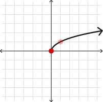
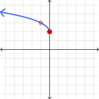
If you have a few key points on the graph, you can apply the transformations to those and get the complete transformed graph!
Consider the function \(f(x-1)-3\).
List \(a\), \(h\), and \(k\) & explain what each transformation causes.
\( 1\cdot f\big(x-(1)\big) +(-3) \)
\(a=1\) means no vertical stretch/shrink or flip
\(h=1\) means horizontal shift right by 1
\(k=-3\) means vertical shift down by 3
Consider the function \(f(x-1)-3\).
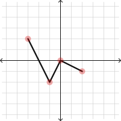
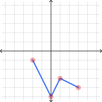
-> 3.4 homework